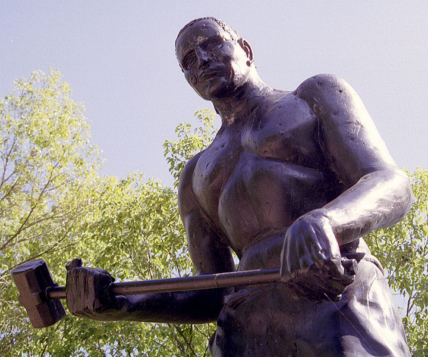
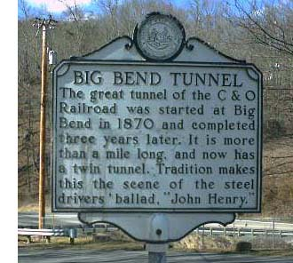

La Balada de John Henry
Cuenta la leyenda que John Henry era un esclavo negro liberado, un hombre de una fuerza increible, quien, después de la guerra de secesión norteamericana, ingresó a trabajar en la construcción del ferrocarril. Era el mejor obrero en la vía del tren, el mas fuerte y veloz.
Un día llega una máquina, un taladro a vapor, con el fin de abrir

un tunel, una máquina capaz de reemplazar a toda la cuadrilla de obreros. John Henry, para defender su trabajo, y el de sus compañeros, le propone un desafío al capataz, competir él contra la máquina perforando la montaña.
El capataz acepta, y John Henry se prepara, su mujer llega a presenciar la hazaña, y aunque su nombre no siempre coincide, en todas las versiones del relato, ella siempre está vestida de azul. El hombre se despide de su mujer, le explica donde están sus ahorros, toma en sus brazos a su pequeño hijo, y le explica que ese gran tunel que va a construir significará la muerte para él.
Con dos enormes mazos en sus manos, el hombre empieza esa carrera imposible. Aunque la máquina es veloz, John es capaz de sacarle varios metros de ventaja. La máquina se detiene, se descompone, incapaz de seguir avanzando y John se abre paso por la montaña abriendo finalmente el tunel.
John Henry ha derrotado a la máquina, sólo para caer al final, con su corazón colapsado por el esfuerzo. Su mujer corre junto a él, “siempre te seré fiel” le dice ella, antes de que él muera en sus brazos.
John Henry, es un heroe del floclore norteamericano, sobretodo entre los afro americanos, y las clases obreras. “Un simbolo de la marginalización obrera durante fines del siglo XIX. Es la ilustración más clara de la futilidad de luchar contra el progreso tecnológico. Algunos han propuesto que es un ejemplo de como muchos de los mejores y más capacitados trabajadores son marginados cuando las compañias están más interesados en la eficiencia y la productividad que en la salud y bienestar de sus empleados.
Aunque John Henry prueba ser más eficiente que el taladro a vapor, el trabaja hasta la muerta y es reemplazado por la máquina, de todas maneras.” [1]

Leí la historia de John Henry hace muchos años, y me impresionó, y me sigue impresionando.Pueden leer más sobre esta leyenda en este sitio, o escuchar las muchas canciones, baladas, y blues escritas alrededor de este personaje mítico.
Hay luchas que son justas, y es claro que la tecnología, muchas veces termina desplazando labores, sobretodo manuales. Gran parte del desempleo estructural es un efecto directo de la eficiencia tecnológica. Mucha labor humana ha sido reemplazada por tecnología, y la tecnología permite reemplazar a cuadrillas de John Henry por un sólo hombre.
Mucho de esto estaba detrás del movimiento ludita original, pero esa es otra historia….
[1] Este relato es adaptación de diversas canciones y poemas sobre John Henry, tomados desde este sitio.
[2] Wikipedia, traducción libre